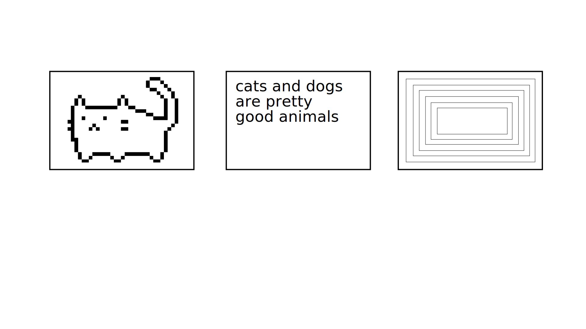
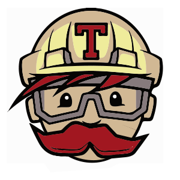

travis won't accept my packages
- @noopkat -
why are we here
automated testing
hardware
♥︎︎
suz hinton
@noopkat
NYC
front-end dev @ kickstarter
testing hardware libraries
unit tests are often not enough
vigilant integration testing is necessary

why not just write a sim?
why not just write a sim?
pixel buffer emulation
clock speed emulation
I2C response emulation
busy/read state emulation
multiplexer emulation
it would be too 'perfect'
A LOT OF WORK
physical
integration testing

so I tried rolling my own in javascript
here is how I did it
npm modules
rvagg / github-webhook-handler
steveukx / simple-git
kaimallea / node-imgur
rwaldron / johnny-five
noopkat / oledjs
misc software
fswebcam
graphics magick
...
did it work?
next steps
next steps
clean up code
documentation
pixel diffing / analysis
do a thing
it's ok to be niche
success is different for everyone
fall in love with testing
> console.log('thank you');
←
→
Go to slide: